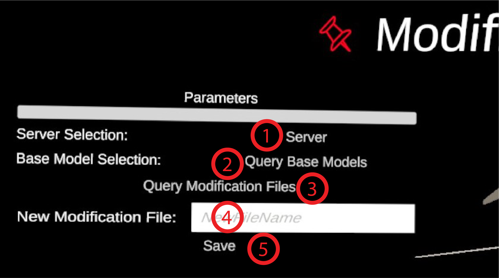

Modification Handler
Requires:
- A connection to Kosmogora.
- The API Checker has validated the
Kosmogoraserver.
This module is used to import and save modification files associated to a model loaded in one of the dive scene. One must input the IP address of the server to query available files but also to save new files (even if the buttons for these two actions are in different panels).
Panel Parameters
- Button Server. Will open the Server choice panel to chose among the
Kosmogora-likeservers which API implements the logic to save and load modification files on base models. - Button Query Base Model. Will scan for all the base models loaded in ECellDive and activate the panel Loaded Base Models for the user to chose one.
- Button Query Available Modification Files. Will try to contact Kosmogora at the address and port given to request the list of modification files currently available. This is fast. If the query is successful, the module will flash green; the list of availalbe files will be displayed in the popup panel Modification Files. If the query fails, the module will flash red. In that case, you can check the error message in the log.
- Input Field File Name. The name of the modification file when saved on the server. If you don't input anything, the name of the file will be set by default to NameOfBaseModel_yyyyMMddTHHmmssZ.
- Button Save. Interactable only if a base model was selected. Will try to contact Kosmogora at the address and port given to save a modification file. This is fast. If the query is successful, the module will flash green; the newly created file will be accessible on Kosmogora. You can check that by re-querying the available files by clicking on button 4. If the query fails, the module will flash red. In that case, you can check the error message in the log. Saving a modification file is closely related to the development of the format of modification file on the side of Kosmogora. The content of the saved modification file is therefore subject to a lot of changes.
Panel Loaded Base Models.

Displays the models loaded in the dive scenes for which we can save the current modifications as compared to when it was loaded.
- Button NameOfTheModel. There should be one button by model loaded in ECellDive (indescriminately of the Dive Scenes). Clicking on the button registers the target base model.
Panel Modification Files

Displays the list of modification files available in Kosmogora if the request was successful.
- Button NameOfModificationFile. There should be one button by modification file saved on the server. Upon clicking the button, the modification file is imported and immediately applied to the corresponding model if it is loaded in a dive scene.